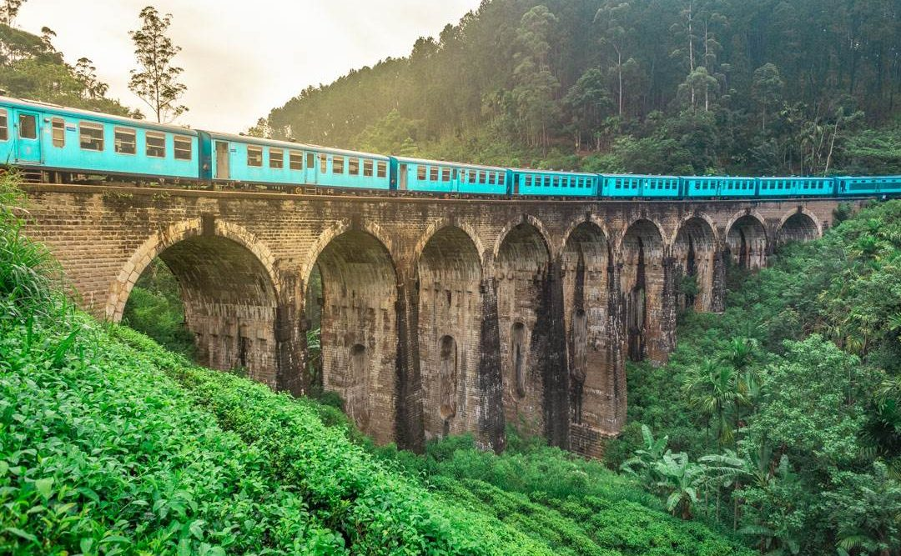

|
 Ella Ella, often described as ‘’lonely planet’’ and ‘’waterfall’’ is a congested town located in Sri Lanka. Ella is pure natural beauty, with its waterfalls, greenery, and hills it is just jaw-dropping. It has views that one hasn’t witnessed before, scenes one hasn't seen before and nature one hasn't felt before. Ella is the perfect place to go to if one wants to refresh the brain. It has many famous places and has been under the attention of tourist for a decent amount of time now. |
 World’s End The Horton Plains plateau comes to a sudden end at World’s End, a stunning escarpment that plunges 880m. The walk here is 4km, but the trail then loops back to Baker’s Falls (2km) and continues back to the entrance (another 3.5km). The 9.5km round trip takes a leisurely three hours. Unless you get there early, the view from World’s End is often obscured by mist, particularly during the rainy season from April to September.All you can expect to see from World’s End after around 9am is a swirling white wall. The early morning (between 6am and 10am) is the best time to visit, before the clouds roll in. That’s when you’ll spy toy-town, tea-plantation villages in the valley below, and an unencumbered view south towards the coas |
 Adam’s Peak There is probably no mountain anywhere more famous than Sri Pada – Adam’s Peak (7362 ft/2250m) for reasons that are cultural and spiritual. It is sacred to three religions at least; to Buddhists, Muslims and Hindus. The mountain is signified by a large depression on the summit that resembles a “foot” to which all three religions draw significance. The climb takes approximately three and a half hours (the way is paved with steps) and the trail is flanked by the Peak Wilderness Sanctuary – one of Sri Lanka’s highest protected forest reserves. Views from the top are stunning, especially early morning as the warmth of dawn lights up the country in an endless vista of forests, valleys, mountains and lakes. The “season” to climb is from December to April where pilgrims begin their climb shortly after midnight in order to summit at sunrise. Year-round climbs during the day are possible, although sporadic rainy weather and mist is to be expected. |